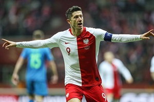

Robert Lewandowski (ur. 21.08.1988 r., 112/61) – uczestnik turniejów
finałowych mistrzostw świata (2018) i mistrzostw Europy (2012, 2016).
Rekordzista pod względem liczby zdobytych bramek w historii reprezentacji Polski,
król strzelców kwalifikacji mistrzostw Europy i świata.
Trafił do księgi rekordów Guinnessa po strzeleniu pięciu goli w ligowym meczu
z VfL Wolfsburg w ciągu dziewięciu minut, był też pierwszym zawodnikiem w historii
Bundesligi wchodzącym z ławki rezerwowych, który zdobył pięć bramek.
Członek Klubu Wybitnego Reprezentanta.
TABELA MECZÓW BRAMEK i ASYST
| Reprezentacja |
Rok |
Mecze |
Bramki |
Asysty |
| Polska U-21 |
2008 |
3 |
0 |
0 |
| Ogólnie |
3 |
0 |
0 |
| Polska |
2008 |
4 |
2 |
0 |
| 2009 |
12 |
1 |
2 |
| 2010 |
13 |
6 |
2 |
| 2011 |
11 |
4 |
2 |
| 2012 |
10 |
2 |
1 |
| 2013 |
10 |
3 |
2 |
| 2014 |
6 |
5 |
3 |
| 2015 |
7 |
11 |
3 |
| 2016 |
12 |
8 |
0 |
| 2017 |
6 |
9 |
2 |
| 2018 |
11 |
4 |
2 |
| 2019 |
10 |
6 |
2 |
| Ogólnie |
112 |
61 |
21 |
Robert Lewandowski (ur. 21 sierpnia 1988 w Warszawie) – polski piłkarz
występujący na pozycji napastnika w niemieckim klubie Bayern Monachium oraz
w reprezentacji Polski, której jest kapitanem. Członek Klubu Wybitnego Reprezentanta,
rekordzista pod względem liczby występów w reprezentacji Polski i najlepszy jej
strzelec w historii. Uczestnik Mistrzostw Świata 2018, Mistrzostw Europy 2012 i 2016.
Karierę zaczynał w Varsovii, nastęnie grał w Delcie Warszawa oraz rezerwach Legii.
W 2006 trafił do Znicza Pruszków, w którym zdobył tytuł najlepszego strzelca
trzeciej i drugiej ligi. W 2008 przeniósł się do Lecha Poznań, z którym zdobył
mistrzostwo, puchar i superpuchar Polski, a także tytuł najlepszego strzelca
Ekstraklasy. W 2010 został zawodnikiem Borussii Dortmund, z którą dwukrotnie
zdobył mistrzostwo Niemiec oraz jednokrotnie krajowy puchar i superpuchar,
a także dotarł do finału Ligi Mistrzów. W sezonie 2013/2014 po raz pierwszy
w karierze został najlepszym strzelcem Bundesligi, zdobywając 20 bramek.
Przed rozpoczęciem sezonu 2014/2015 przeniósł się do Bayernu Monachium,
gdzie w każdym z pięciu pierwszych sezonów zdobywał mistrzostwo Niemiec,
a także strzelił 150 goli w Bundeslidze. W sezonie 2015/2016 po raz drugi zdobył
tytuł najlepszego strzelca Bundesligi, strzelając 30 goli. Powtórzył to osiągnięcie
w sezonach 2017/2018 (29 goli) i 2018/2019 (22 gole). Z dorobkiem 230 goli jest
najskuteczniejszym zagranicznym piłkarzem w historii Bayernu Monachium.
W reprezentacji Polski zadebiutował 10 września 2008 w meczu eliminacji mistrzostw
świata z San Marino (2:0), strzelając jednocześnie swojego pierwszego gola.
Od tamtego czasu w kadrze narodowej rozegrał 112 meczów, strzelając w nich 61 goli,
co czyni go najlepszym strzelcem reprezentacji w historii. 9 grudnia 2014 został
kapitanem reprezentacji Polski. Wystąpił z nią na mistrzostwach Europy w 2012,
2016 oraz na mistrzostwach świata w 2018.
22 września 2015, podczas ligowego meczu Bayern Monachium z VfL Wolfsburg,
Lewandowski strzelił pięć goli w ciągu dziewięciu minut. Było to najszybciej
strzelone pięć bramek w historii czterech najsilniejszych lig Europy od czasów
prowadzenia zapisów.
W 2016 został wybrany Sportowcem Roku 2015 w plebiscycie Przeglądu Sportowego
oraz zajął czwarte miejsce w plebiscycie Złotej Piłki za rok 2015.
Dziennik The Guardian umieścił go również w gronie pięciu najlepszych piłkarzy na
świecie[4]. W 2015 federacja IFFHS uznała go najskuteczniejszym strzelcem rozgrywek
międzynarodowych. Mając na koncie 17 klubowych trofeów, jest najbardziej
utytułowanym polskim piłkarzem w historii. Ośmiokrotny zwycięzca plebiscytu
Piłki Nożnej w kategorii „piłkarz roku”. W latach 2011–2017 otrzymał tę nagrodę
siedem razy z rzędu, co czyni go samodzielnym rekordzistą pod tym względem.
Działalność pozasportowa
Aktywnie działa w branży reklamowej, inwestycyjnej, deweloperskiej czy mieszkaniowej.
Jest udziałowcem spółki Protos Venture Capital, przez którą inwestuje w startupy,
e-commerce i serwisy internetowe. Posiada własną agencję Stor9_, specjalizującą się
w komunikacji marketingowej, która zajmuje się zawodowym wizerunkiem piłkarza oraz
jego żony, ułatwiając zarządzanie ich działaniami o charakterze biznesowym.
Jest także udziałowcem serwisów: sporticos.com, lokalnyrolnik.pl i wedding.pl,
a także wielu innych.
Wspiera również wiele inicjatyw społecznych i charytatywnych.
Wraz z żoną bierze udział w akcji Szlachetna Paczka, a także pomaga w zbiórkach
Wielkiej Orkiestry Świątecznej Pomocy.
Od 2014 jest ambasadorem dobrej woli UNICEF.
Życie prywatne
Wychowywał się w sportowej rodzinie. Ojciec Krzysztof (zm. 2005) uprawiał judo
i grał w piłkę nożną w trzecioligowym Hutniku Warszawa. Matka Iwona była siatkarką
pierwszoligowego AZS Warszawa. Po śmierci męża objęła po nim funkcję kierownika hali
sportowej w podwarszawskim Lesznie, a następnie pełniła funkcję wiceprezesa
miejscowego klubu Partyzant, w którym pierwsze piłkarskie kroki stawiał Robert.
Obecnie jest nauczycielką wychowania fizycznego. Ma starszą siostrę Milenę.
W czerwcu 2015 został ojcem chrzestnym jej syna Leona. Jest katolikiem.
Jego piłkarskim idolem był francuski piłkarz Thierry Henry.
22 czerwca 2013 w kościele Zwiastowania Najświętszej Maryi Panny Parafii św. Anny w Serocku
ożenił się z Anną Stachurską, zawodniczką karate i specjalistką do spraw żywienia.
4 maja 2017 na świat przyszła ich córka Klara.
9 października 2017 z wyróżnieniem obronił pracę licencjacką na kierunku
wychowanie fizyczne o specjalizacji trenersko-menedżerskiej w Wyższej Szkole Edukacji
w Sporcie w Warszawie.
Uhonorowanie
W 2015 został uhonorowany tytułem „Zasłużony dla Powiatu warszawskiego zachodniego”,
zaś w lipcu 2015 został honorowym obywatelem gminy Leszno.
W 2017 jego imieniem nazwano jedną z ulic w Kuźni Raciborskiej.
14 czerwca 2018, z okazji inauguracji Mistrzostw Świata w Piłce Nożnej 2018,
Poczta Polska wprowadziła znaczek obiegowy z podobizną Roberta Lewandowskiego.
Lata 2008–2012
25 marca 2008 zadebiutował w reprezentacji Polski do lat 21 w zremisowanym 0:0
meczu towarzyskim z Anglią. Łącznie wystąpił w 3 spotkaniach tej kadry.
We wrześniu 2008 został powołany przez Leo Beenhakkera do reprezentacji Polski
na mecze eliminacji Mistrzostw Świata 2010 ze Słowenią i San Marino.
Zremisowany 1:1 mecz ze Słowenią w całości spędził na ławce rezerwowych.
10 września 2008 zadebiutował w reprezentacji Polski w meczu wyjazdowym eliminacji
przeciwko San Marino, zmieniając w 59. minucie meczu Marka Saganowskiego.
W 67. minucie tego spotkania, dobijając niecelne uderzenie Euzebiusza Smolarka,
strzelił swojego pierwszego gola dla reprezentacji czym ustalił wynik końcowy na 2:0.
2 maja 2012 został powołany przez Franciszka Smudę na Mistrzostwa Europy 2012.
W 17. minucie meczu otwarcia z Grecją strzelił głową gola na 1:0 po podaniu
Jakuba Błaszczykowskiego. Mecz zakończył się wynikiem 1:1.
W spotkaniach z Rosją i Czechami Lewandowski rozegrał pełne 90 minut.
Ostatecznie Polska odpadła z turnieju po fazie grupowej.
Przed towarzyskim meczem z Urugwajem, który odbył się 14 listopada 2012,
odebrał z rąk prezesa PZPN, Zbigniewa Bońka, pamiątkową paterę z okazji swego
pięćdziesiątego występu w reprezentacji. Tym samym Lewandowski stał się drugim
najmłodszym zawodnikiem w historii, który zaliczył 50 występów w polskiej kadrze
narodowej, plasując się zaraz po Władysławie Żmudzie.
Lata 2013–2016
W meczu piłkarskich eliminacji Mistrzostw Świata 2014 z San Marino wystąpił jako
kapitan drużyny (w miejsce swojego klubowego kolegi Jakuba Błaszczykowskiego,
który w tym meczu nie zagrał z powodu kontuzji) i zdobył dwie bramki z rzutów karnych.
Były to pierwsze zdobyte bramki w reprezentacji od czasu Mistrzostw Europy.
19 listopada 2013 w meczu z Irlandią rozegrał 60. spotkanie w barwach reprezentacji
Polski i dołączył do Klubu Wybitnego Reprezentanta.
1 lutego 2014 został ogłoszony kapitanem kadry narodowej w zastępstwie za
kontuzjowanego Jakuba Błaszczykowskiego. 9 grudnia Adam Nawałka poinformował o
objęciu przez niego na stałe funkcji kapitana reprezentacji Polski. 7 września 2014
strzelił pierwszego hat tricka dla Polski, zdobywając cztery bramki podczas meczu
z Gibraltarem (7:0). 13 czerwca 2015 po raz kolejny zdobył hat-tricka w meczu
z Gruzją (4:0) podczas eliminacji do Mistrzostw Europy 2016. 4 września 2015 zdobył
jedynego gola w przegranym 1:3 wyjazdowym meczu z Niemcami. Trzy dni później w
wygranym 8:1 pojedynku z Gibraltarem strzelił 2 gole. 8 października 2015 w
zremisowanym 2:2 spotkaniu ze Szkocją zdobył 2 bramki, w tym wyrównującą w ostatniej
akcji meczu. 11 października 2015 w wygranym 2:1 starciu z Irlandią strzelił gola
na wagę awansu reprezentacji Polski na Mistrzostwa Europy we Francji. Stał się
wówczas pierwszym polskim piłkarzem, który strzelał gola w 5 kolejnych meczach
reprezentacji polski o punkty. Lewandowski trafiał do siatki kolejno:
Gruzji, Niemiec, Gibraltaru, Szkocji i Irlandii zdobywając w tych spotkaniach 9 bramek.
Łącznie w eliminacjach do Mistrzostw Europy 2016 strzelił 13 goli, dzięki czemu został
królem strzelców tych rozgrywek i wyrównał rekord eliminacji ustanowiony
w kwalifikacjach do Mistrzostw Europy 2008 przez Davida Healy’ego z Irlandii Północnej.
Polak został również wybrany najlepszym zawodnikiem eliminacji.
12 maja 2016 został powołany przez Adama Nawałkę do szerokiej kadry na
Mistrzostwa Europy 2016 we Francji. 30 maja 2016 Adam Nawałka oficjalnie powołał
go do ścisłego składu na mistrzostwa Europy. Na Euro 2016, Polska, po pokonaniu
Irlandii Północnej (1:0) i Ukrainy (1:0), a także po bezbramkowym remisie z Niemcami,
zajęła drugie miejsce w grupie C i po raz pierwszy w historii awansowała do fazy
pucharowej Mistrzostw Europy. Następnie po wyeliminowaniu w 1/8 finału,
Szwajcarii (1:1, k. 5:4), odpadła dopiero w ćwierćfinale po porażce w rzutach karnych
(1:1, k. 3:5) z Portugalią. Lewandowski, jako kapitan zespołu, wystąpił we wszystkich
5 meczach kadry na turnieju i strzelił 1 gola – we wspomnianym meczu ćwierćfinałowym
z Portugalią, kiedy to w 100. sekundzie spotkania, po asyście Kamila Grosickiego,
strzelił drugą najszybszą bramkę w historii Mistrzostw Europy.
W 2016, strzelając gole kolejno Portugalii w ćwierćfinale Euro 2016 oraz
Kazachstanowi, Danii, Armenii i Rumunii w eliminacjach do Mistrzostw Świata 2018,
wyrównał rekord z 2015 dotyczący strzelenia bramki w pięciu kolejnych meczach kadry
o punkty. Strzelając dwa gole z Rumunią, zdobył 27. bramkę w meczach reprezentacji
o stawkę, pobijając rekord 25 trafień Włodzimierza Lubańskiego.
Od 2017
26 marca 2017, strzelając bramkę w meczu eliminacji do Mistrzostw Świata 2018,
przeciwko Czarnogórze (2:1), został rekordzistą reprezentacji Polski, jako pierwszy
w historii, zdobywając bramkę w sześciu kolejnych spotkaniach kadry. Ponadto
Lewandowski, dokonał tego wyłącznie w spotkaniach o stawkę. Wspomnianą bramką
wyrównał także rekord 8 goli strzelonych przez Polaka, w jednej edycji kwalifikacji
do mundialu, ustanowiony w 2001 przez Emmanuela Olisadebe. Gol strzelony w meczu
z Czarnogórą był także pierwszą jego bramką w reprezentacji Polski zdobytą
bezpośrednio z rzutu wolnego. 10 czerwca 2017, w meczu eliminacji do Mistrzostw
Świata, przeciwko Rumunii (3:1), strzelił trzy bramki czym poprawił swoje
indywidualne rekordy ustanowione w poprzednim meczu kadry. Lewandowski został
pierwszym piłkarzem, który zdobywał bramki w siedmiu kolejnych spotkaniach
reprezentacji (ogólnie oraz w spotkaniach o punkty), a także z 11 bramkami, został
rekordzistą reprezentacji Polski pod względem goli strzelonych w jednej edycji
kwalifikacji do Mistrzostw Świata. Hat-trick w meczu z Rumunią, pozwolił mu również
wyprzedzić o jedną bramkę, zdobywcę 45 goli dla Polski, Grzegorza Lato,
w klasyfikacji strzelców wszech czasów reprezentacji Polski i awansować na pozycję
wicelidera tego rankingu – za zdobywcą 48 goli, Włodzimierzem Lubańskim.
5 października 2017, podczas rozgrywanego w Erywaniu meczu eliminacji Mistrzostw
Świata 2018 z Armenią (6:1), Robert Lewandowski zanotował swoje 48, 49 i 50. trafienie
w narodowych barwach i pobił tym samym, wynoszący 48 bramek, rekord Włodzimierza
Lubańskiego, zostając najlepszym strzelcem w historii reprezentacji Polski.
8 października 2017, odnosząc zwycięstwo 4:2 w meczu z Czarnogórą, awansował z
reprezentacją Polski na Mistrzostwa Świata 2018, natomiast sam w tamtym spotkaniu
strzelił swoją 16. bramkę w eliminacjach do Mistrzostw Świata 2018, osiągając taki
wynik jako pierwszy zawodnik w historii europejskiej edycji eliminacji i zostając
królem strzelców ówczesnej edycji.
11 maja 2018 został powołany przez selekcjonera Adama Nawałkę do szerokiej kadry na
Mistrzostwa Świata 2018 w Rosji. 4 czerwca 2018 Adam Nawałka oficjalnie powołał go
do ścisłego składu na mistrzostwa świata. Na Mundialu zadebiutował 19 czerwca 2018
w przegranym 1:2, pierwszym meczu fazy grupowej z Senegalem. Ostatecznie,
reprezentacja Polski, po porażkach z Senegalem (1:2), Kolumbią (0:3) oraz wygranej
z Japonią (1:0), zakończyła udział w turnieju po fazie grupowej, natomiast
Robert Lewandowski, jako kapitan drużyny, wystąpił we wszystkich trzech spotkaniach.
11 października 2018 na Stadionie Śląskim w Chorzowie, w przegranym 2:3 meczu w
Lidze Narodów 2018/2019 z Portugalią, rozegrał setne spotkanie w barwach
reprezentacji Polski.
Robert Lewandowski jest zawodnikiem, który występuje na pozycji środkowego napastnika.
Cechuje go ponadprzeciętna precyzja i skuteczność w wykańczaniu akcji.
Bardzo dobrze gra głową, a także obiema nogami, chociaż jego wiodącą jest noga prawa.
Do perfekcji opanował wykonywanie rzutów karnych. Zdobywa także bramki bezpośrednio
z rzutów wolnych. Przez ekspertów uznawany jest za napastnika kompletnego,
jednego z najlepszych we współczesnej piłce nożnej. Posiada wszelkie niezbędne cechy
tradycyjnej „dziewiątki”, jest wysoki, dobrze zbudowany, silny, szybki,
potrafi bardzo dobrze i inteligentnie poruszać się na boisku. Mimo że występuje jako
napastnik, jest bardzo przydatny także w grze obronnej oraz w fazie odbioru piłki.
Potrafi umiejętnie się zastawić, utrzymać piłkę, rozprowadzić akcję, a także
skupiając na sobie uwagę obrony, stworzyć przestrzeń dla innych zawodników.
Wyróżniają go bardzo dobre umiejętności techniczne, wizja gry,
przygotowanie i siła fizyczna. Oprócz niezaprzeczalnych umiejętności czysto
piłkarskich, Lewandowski przez ekspertów, zawodników i trenerów jest również
chwalony za wybitną etykę pracy, profesjonalizm, wzorową mentalność, dyscyplinę,
prowadzenie zdrowego stylu życia i skrupulatne przestrzeganie diety żywieniowej.